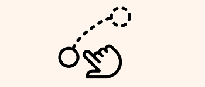

Veuillez faire un glisser / déposer de l'image dans le rectangle :

recommencer
Comment faire un glisser déposer?
-
Cliquer sur un élément graphique avec le bouton principal de la souris (le gauche)
-
Maintenir ce bouton enfoncé, et ...
-
Relâcher lorsque le pointeur a atteint sa cible.